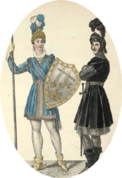
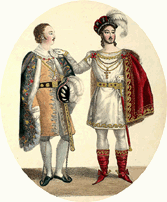
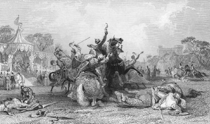
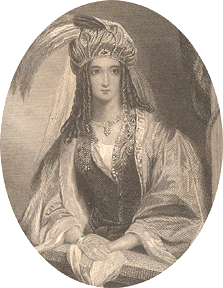

|
|
||
|
|
Home | Corson Collection | Biography | Works | Image Collection | Recent Publications | Portraits | Correspondence | Forthcoming Events | Links | E-Texts | Contact IvanhoeFirst Edition, First Impression: Ivanhoe; A Romance. By "The Author of Waverley" &c. In Three Volumes. Vol. I (II-III). Edinburgh. Printed for Archibald Constable and Co. Edinburgh; and Hurst, Robinson, and Co. 90, Cheapside, London, 1820. Composition | Sources | Synopsis | Reception | Links CompositionIvanhoe was the first novel in which Scott adopted a purely English subject, portraying the enmity of Saxons and Normans during the reign of Richard I (1189-99). Various explanations have been offered for Scott's decision to turn to medieval England. J. G. Lockhart in his Memoirs of the Life of Sir Walter Scott, Bart. (1837-38) suggests that it may have been sparked by the 'after-dinner conversation' of his friend William Clerk which first drew Scott's attention to racial tensions in post-Norman Conquest England. Clerk noted how our names for livestock generally have Anglo-Saxon origins (e.g. sheep, pig, cow) which are exchanged for Anglo-French terms once they are prepared for the table (e.g. mutton, pork, beef). This illustration of the subservience of labouring Saxon to land-owning Norman was subsequently inserted in Ivanhoe. For Graham Tulloch, editor of the recent Edinburgh Edition of the novel (1998), Clerk's observation may have combined with a childhood memory of seeing Saxons and Normans aligned at opposite sides of the stage in John Logan's play Runnamede (1784). It has also been suggested that Scott wished to give fictional form to the ideas explored in his 'Essay on Chivalry' (1818), to seek an English historical equivalent of the feudal clan-based society that he had portrayed in Waverley, Rob Roy, and A Legend of Montrose, or to take up Joanna Baillie's suggestion that he devote a novel to the persecution of witches. The Middle Ages may, moreover, have been particularly present in Scott's mind, as he was acquiring antique weapons for the 'armoury' at Abbotsford. Whatever first drew Scott to King Richard's England, it is clear that, first and foremost, he wished to start afresh, abandoning subject-matter of which he feared the public would rapidly tire. It was Scott's original desire that the novel appear without any indication of authorship. He was curious to see whether the public would recognize the 'author of Waverley' behind the assumed narrative persona of Lawrence Templeton. He even hoped to publish Ivanhoe and his next novel The Monastery in tandem, thus effectively entering into competition with himself. He was ultimately prevailed upon to drop the plan by Archibald Constable, who feared that the two novels would harm each other's sales, especially given that a spurious Fourth Series of Tales of My Landlord would shortly be published. Scott began work on Ivanhoe just as he was emerging from the severe gallstones-related illness which had plagued him while writing The Bride of Lammermoor and A Legend of Montrose. Although Scott had only finished writing A Legend of Montrose at the beginning of June 1819, John Ballantyne records the signing of the contract for Ivanhoe in his journal for the 8th of that month. In a letter of 14 June to his factor and amanuensis William Laidlaw, Scott indicates that he is keen to begin dictating the new novel. It is unlikely, however, that he had begun before suffering a recurrence of his illness in mid-June. According to Lockhart, this was so severe that Scott believed he was on the point of death and, at one point, called his family to his bedside so that he might take his leave. By 2 July, Scott was sufficiently recovered to have begun dictating the novel. It appears, from the extant manuscript, that Scott dictated most of the first two volumes before resuming writing by hand sometime before 19 August (by which date the second volume was complete). Work on the third volume was very much slower due to a hold-up at the printers who were suffering a shortage of paper. Scott also complains of a 'very slow transcriber' (possibly Laidlaw) whose job it was to transcribe Scott's manuscript in order to preserve the anonymity of the 'Author of Waverley'. It seems likely that Scott, in his frustration, may have temporarily laid aside Ivanhoe and began work on The Monastery. Despite the delay the novel was complete by 10 November, but persisting paper shortages ensured that it was not published in Edinburgh until 18 December. London publication had to wait until 31 December, as the ship carrying copies to Scott's London publisher Hurst, Robinson, and Co. was caught in a storm. Published so close to the end of the year, Ivanhoe bore the date 1820 on its title-page. SourcesIvanhoe is set in 1194, when Richard I returned from the Third Crusade to reclaim his kingdom from his brother John, who had usurped much of Richard's power during his long absence in the Holy Land. For his portrayal of Saxon England, Scott drew extensively on Robert Henry's The History of Great Britain, Sharon Turner's The History of the Anglo-Saxons from the Earliest Period to the Norman Conquest, and Joseph Strutt's Sports and Pastimes of the People of England. For the characterization of Richard I, Scott drew on Henry again and on David Hume's The History of England. In many areas of the novel, however, literary sources proved as important as scholarly works. In his depiction of medieval England, Scott takes much from Chaucer's Canterbury Tales. Shakespeare's King John is a clear influence on Scott's depiction of Richard's brother and A Merchant of Venice on Scott's Jewish characters. Finally, numerous details are suggested by Joseph Ritson's Robin Hood: A Collection of All the Ancient Poems, Songs, and Ballads.  SynopsisThe novel's hero, Wilfred of Ivanhoe, is the son of Cedric, a Saxon nobleman. In the hope of one day restoring the Saxon dynasty, Cedric wishes to marry his ward Rowena, a descendant of Alfred the Great, to Athelstane of Coningsburgh, a descendant of Edward the Confessor. Ivanhoe's love for Rowena, however, threatens these plans, leading Cedric to disinherit him. Ivanhoe joins the Third Crusade, and, fighting alongside Richard the Lionheart in the Holy Land, wins the King's favour. The novel begins with Ivanhoe's return to England, where Prince John is plotting to depose his brother Richard, who has been taken captive in Austria on his way home from the Crusades. On his way to a great tournament at Ashby-de-la-Zouch, Ivanhoe
visits his father's house disguised as a pilgrim. Here he saves
the life of Isaac, a rich Jew of York, by warning him of a
planned ambush. At Ashby, Ivanhoe, with the help of the King who
has returned to England in disguise, vanquishes
all of King John's supporters, including his great personal enemy,
the Templar Sir Brian de Bois-Guilbert and the brutal baron Front-de-Boeuf.
Ivanhoe is wounded in the tournament and nursed back to health
by Isaac's daughter Rebecca. Bois-Guilbert and Front-de-Boeuf then
assist a mercenary leader Maurice de Bracy
in a plan to abduct Rowena. Her travelling party, which includes
Cedric, Athelstane, Isaac, Rebecca, and the still-recovering Ivanhoe,
is attacked and all are led captive to Front-de-Boeuf's Castle
of Torquilstone. Here Rowena and Rebecca courageously resist the
advances
of, respectively de Bracy and Bois-Guilbert, who has become enamoured
of the Jewess. The castle is successfully besieged by a band of
Saxons and outlaws, led by Locksley (alias Robin Hood) and King
Richard himself, and the prisoners liberated except Rebecca, whom
Bois-Guilbert carries off to the Preceptory of Templestowe.  The unexpected arrival at Templestowe of the Grand Master of the Knights Templar leads to a charge of witchcraft against Rebecca, who only manages to escape immediate execution by demanding trial by combat. At the last moment, Ivanhoe appears as her champion to a face a reluctant Bois-Guilbert who has been commanded to represent his order. At the first pass, Bois-Guilbert falls dead from his horse, unwounded but 'a victim to the violence of his own contending passions'. At the end, Richard reconciles Ivanhoe and Cedric, Athelstane withdraws his claim to Rowena's hand, and Ivanhoe and Rowena marry. Rebecca, stifling her love for Ivanhoe, accompanies her father to Spain, where they hope to find a more tolerant society. ReceptionIvanhoe was as much a success with the critics as it was with the reading public. For Francis Jeffrey in the Edinburgh Review, the work showed 'at least as much genius as any of those with which it must now be numbered'. For the Literary Gazette, it was 'a performance of unequalled excellence' and, for the Quarterly, a 'splendid masque'. Their only major reservations concerned the relatively insipid Rowena and the improbability of Athelstane's resurrection from presumed death at the novel's conclusion. A rare detractor was the British Review which detected an exhausted vein of inspiration and over-rapid, impromptu plotting. Ivanhoe sold at a phenomenal rate. Within less than two weeks, the entire first printing of 10,000 copies was exhausted and the demand for more copies put the printers under serious pressure. Translated into numerous languages, it marked the beginning of Scott's European vogue and the emergence of the historical novel as an international phenomenon. Links
Last
updated: 19-Dec-2011
|
|